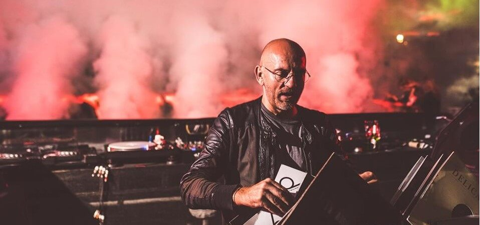

RICHIE HAWTIN
Richie Hawtin (born Richard Michael Hawtin) is a British DJ, musician and producer, naturalized Canadian. He currently resides in Berlin. He is considered one of the greatest exponents of electronic music. He is among the best known electronic music artists in the world, thanks to a career of more than 30 years. Active in the North American techno and acid scene since its inception, it has evolved towards a more minimalist and experimental style, favoring the use of the latest composition and DJing technologies. Although he has often produced under his real name, he also uses numerous pseudonyms, the best known of which is Plastikman. He is the founder and owner of the record labels Plus 8 and Minus, from which he has published his most significant albums, among them the album Consumed, published in 1998, and the series of mixed albums DE9, among which the most famous is DE9 | Closer to the Edit Closer to the Edit]], published in 2001.

PACO OSUNA
With a 25-year career, Paco Osuna is today one of the most renowned artists in the electronic music industry. Creativity and incessant search for new ways of expression are some of its main constants and virtues. In his presentations he is dynamic, cheerful, intelligent, sophisticated and has a deep awareness of sound aesthetics. For Paco all sessions are important and it is a requirement to innovate and renew oneself.In the production studio Paco has formed his own musical insignia, covering the purest techno sounds with their most characteristic features: depth and darkness and imagination, always accentuated by his creativity. Proof of this are his publications on labels such as Plus8, Minus, Mood, Items & Things Spectral, Hommage and Mindshake. In addition to making remixes for artists such as Plastikman, Nicole Moudaber, Matador, Adam Beyer, Seth Troxler or Monkey Safari.In 2006 he launched Mindshake, a label conceived as a platform for the creation and distribution of electronic music. Mindshake in recent years has become one of the most relevant techno labels in the USA and Europe.
DUBFIRE
Ali Shirazinia (born April 19, 1971 in Tehran, Iran) known by his stage name Dubfire, is an Iranian-American disc jockey and producer, currently based in Barcelona, Spain. She is one half of the Grammy award-winning house music duo Deep Dish. In 2008, it reached its best position in the annual survey conducted by DJmag magazine, ranking at # 30. Currently, it is one of the benchmarks of minimal techno, and owns the SCI + TEC Digital Audio label.Shirazinia was born in Iran and moved with her family to Washington, D.C., at a young age. During his youth he listened to various musical rhythms such as Hip-Hop, jazz / rare groove, dub reggae, new wave and industrial, and was also influenced by the local punk scene and by bands from Washington DC, such as Fugazi and Minor Threat. Shirazinia frequented a record store called "Yesterday And Today Records", where she became familiar with the sounds of artists such as Kraftwerk, Ministry, Jesus & Mary Chain, Depeche Mode, Nitzer Ebb, Adrian Sherwood.
MARCO CAROLA
At the age of 13 he obtained his first drums, which he played for years before buying and playing records. In 1990, when the Italian House scene was in its golden age - along with the Acid House craze in Britain - Carola's drums were replaced by two turntables and a mixer. He practiced a lot with the table and quickly learned to play the new rhythms that were heard on the dance floors. Carola's transition to techno began in 1993 with other Neapolitan friends and clubbers such as Gaetano Parisio, Davide Squillace, Random Noize and other DJs who were looking to do something new on the Neapolitan scene. With the golden age of the Italo-House coming to an end, techno offered new possibilities for experimentation with all those new sounds that Marco and his friends loved. At that time Marco also began to think about creating his own studio to express his own vision of techno. His ability to mix music and his talent in the field of production led many artists to visit his studio to record. In addition to various House tracks.

SVEN VATH
Sven Väth (born October 26, 1964 in Obertshausen, Germany) is a German techno DJ who has produced a large number of works since the beginning of his career in 1982. He is also one of the founders of Harthouse Records and now missing Eye Q Records. Väth is also known as R U Ready and Sam Vision. He has been a member of the groups 16 Bit, Astral Pilot, Barbarella, The Essence Of Nature, Metal Masters, Mosaic and Off. VÄth is best known for his 1986 hit "Electrica Salsa" released under the pseudonym OFF, a single that topped the European charts. He is currently the head and founder of the Cocoon label as well as owning a club in Frankfurt am Main with the same name. Cocoon is also the name of one of the strongest bookings in the world in the electronic scene, with such important names as: Ricardo Villalobos, James Holden, Frank Lorber, Tobi Neumann, Gregor Tresher, Dubfire and Sven Väth himself among other Dj's and renowned producers. He is recognized for cultivating the underground electronic music scene not just in Germany but in Ibiza as well, with his own night at Amnesia .
HERNAN CATTANEO
He was born in the Buenos Aires neighborhood of Caballito, on March 4, 1965. From a young age he had an interest in bands such as Simply Red, Level 42, Depeche Mode and New Order. He was interested in news about music through few sources to which he had access, such as Billboard magazine. According to Cattaneo, Frankie Knuckles marked a great influence on his career as a DJ and feels respect and admiration for artists and groups such as Knuckles, Inner City and Derrick May. This stimulated the artistic direction of Cattaneo, positioning him among well-known DJs. In his teens, he began to show his talent at private parties such as at the Italian Club in Buenos Aires, at the Sabash albums in Villa Gesell and Cinema also in Buenos Aires.At the beginning of the 1990s, he played music for FM Z95, a radio station focused on the diffusion of electronic music in Argentina, which, years late. Around 1994 Cattaneo was already a DJ. At the beginning of 1998 he inaugurated the Clubland cycle as a resident DJ.
LOCO DICE
Loco Dice, born in Tunisia as Yassine Ben Achour, is a German dj and producer endowed with enough empathy to hypnotize audiences and make them fly thanks to his sessions. He began his career as a hip hop dj, until he discovered the techno and house scene and began his meteoric career. It was then that he arrived on the island and positioned himself as a resident of DC10. In 2008 he recorded his first album for Desolat, a label that he created with Martin Buttrich, entitled ‘7 Dunham Place’. His world fame, especially in Germany and the United Kingdom, and his sexy and pleasant style allowed him to get to have a residence in one of the coolest clubs in the world: DC-10, in Ibiza, and in the favorite place of Germany: Tribehouse, in his native Düsseldorf. Loco Dice toured South America, the United States and Europe and played venues such as Crobar, Creamfields, Pacha and Fiebre Versilia, in Italy. He did it also in raves and beaches. And he even became a presenter for the music channel MTV.
LUCIANO
Luciano was born in Montcherand, Switzerland to a Swiss father and Chilean mother. His father was a jukebox repairman with a large record collection that was played at home.While part of his childhood was spent in Switzerland, musically it would not be as influential as the Chilean and Latin American sounds he would experience upon moving to Santiago, Chile at the age of eleven. His mother along with his sister relocated there after his parents' divorce. When he was twelve years old, his mother bought him a guitar, which was when Luciano's involvement with music began. He was the guitar player in a punk rock band at school until the age of sixteen. Not long after, he learned that electronic instruments such as sequencers and drum machines were replacing analog ones. After finding a French band called Bérurier Noir that used drum machines in place of a drum set, his passion and interest in electronic music commenced. Luciano and his wife have 3 sons and a daughter. In 2007, Luciano moved from Berlin a Swiss village near Geneva to spend more time with them. Luciano enjoys gardening, nature and being surrounded by it. At the beginning of his career, his handlebar moustache was his signature image.

HOT SINCE 82
Padley entered the electronic music scene at a young age, beginning to frequent area nightclubs at the age of 14.His DJ education started at 17, playing 12–13-hour sets each Sunday at a club in his hometown (under his birth name). His residency soon became a top afterparty destination for clubbers in the area. As word got around, Padley's notoriety increased, resulting in a 2006 residency at Cream Ibiza in Amnesia under the banner of Leeds club Glasshouse. In 2010, Padley was attending an Ibiza afterparty when the music suddenly cut out. He plugged his iPhone into the party's speakers, and incidentally, one of his works-in-progress came on. Though Padley had admittedly not made the track with the intent of releasing it, reactions at the party were roundly positive, causing him to contact his friend Danish DJ / Producer Noir, who runs the record label Noir Recordings. Noir was impressed, and released it on his label. 'Let It Ride' came out on Noir Music on September 5, 2011, hitting number three on Beatport's deep house chart. Thus, Hot Since 82 was born.Rising out of obscurity, Daley has recently been featured in a variety of widely popular electronic music .